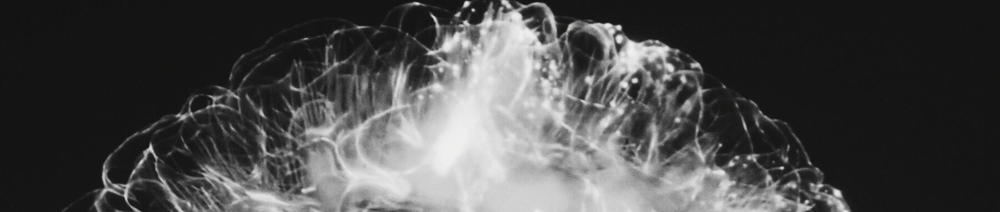

Brain Tumor Detection

The brain tumor detection project is a medical image processing application that uses
advanced
algorithms to analyze medical images, such as MRI or CT scans of the brain, to identify and
classify the presence of brain tumors. The primary objective is to assist medical
professionals
in accurately diagnosing and localizing brain tumors, enabling timely treatment and improved
patient outcomes. This project leverages machine learning, image segmentation, and pattern
recognition techniques to automate the detection process, making it faster and more precise.